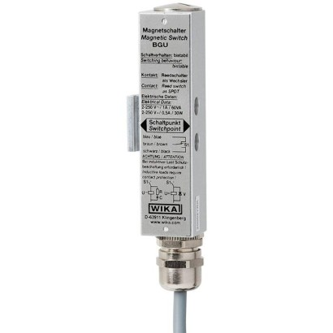
WIKA Model BGU
Magnetic switch
Cảm biến và công tắc đo mức phao, thủy tĩnh và bypass WIKA cho bồn, bể chứa công nghiệp.
Chọn model để xem thông số, ứng dụng, datasheet và gửi yêu cầu báo giá WIKA chính hãng.

Magnetic switch
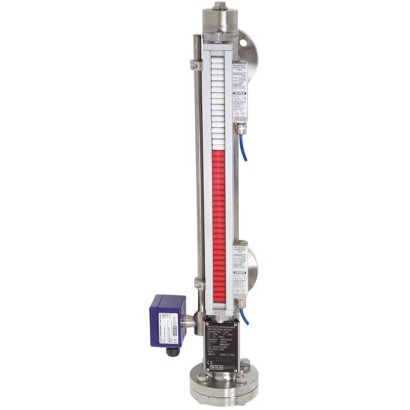
Bypass level indicator
Level indicators
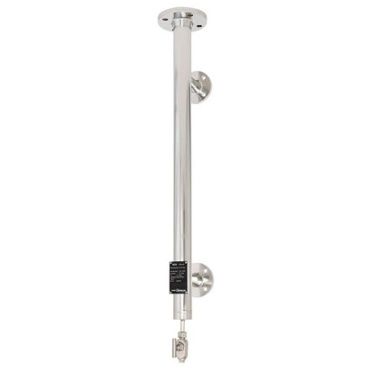
External chamber
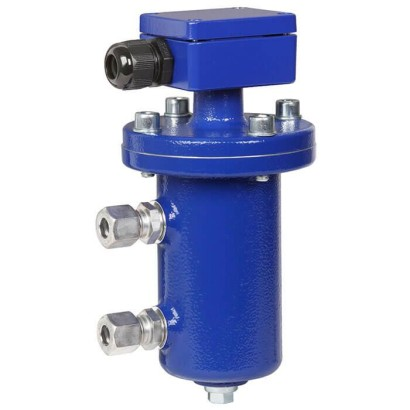
Level switch
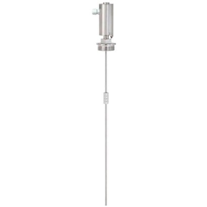
Magnetostrictive level transmitter
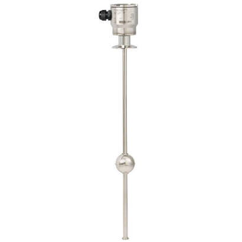
Reed level transmitter
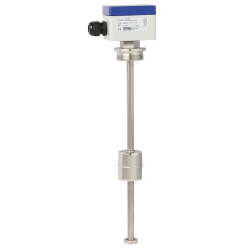
Reed level transmitter
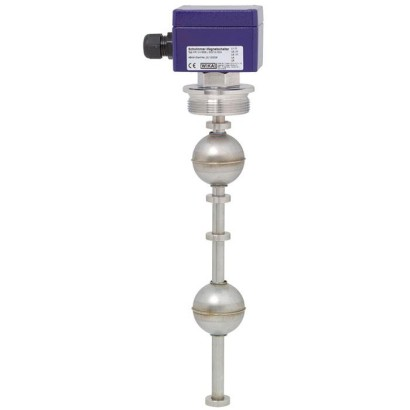
Float switch
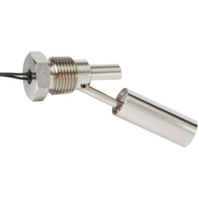
Float switch
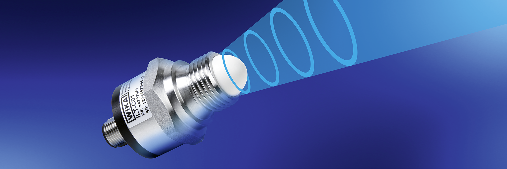
Radar sensors
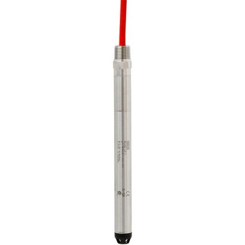
Submersible pressure sensor
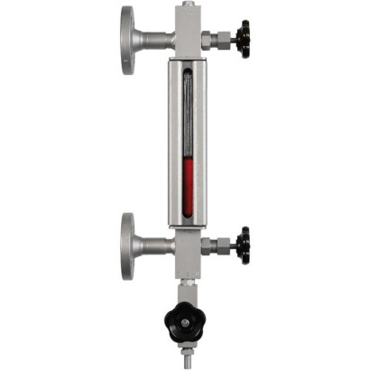
Glass level gauge
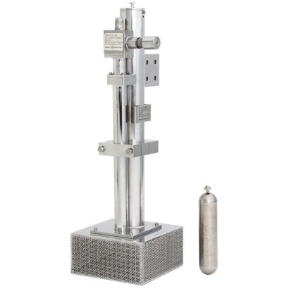
Level sensor with reed measuring chain
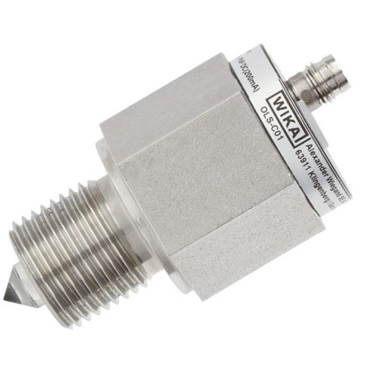
Optoelectronic level switch
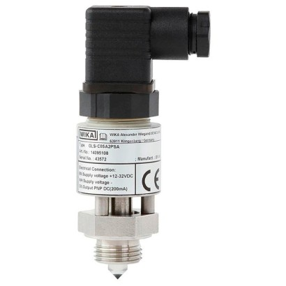
Optoelectronic level switch
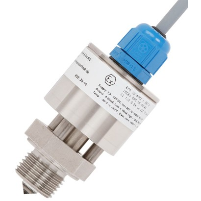
Optoelectronic level switch
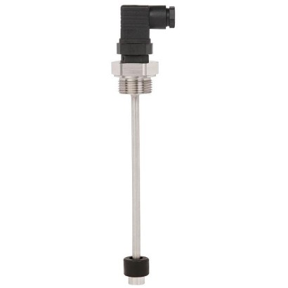
Float switches
Float switch
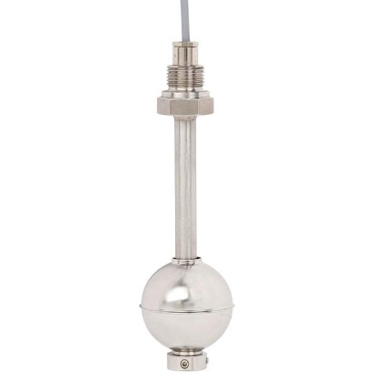
Float switch
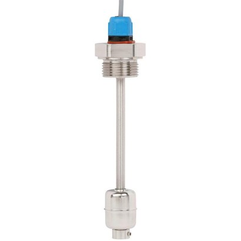
Float switch
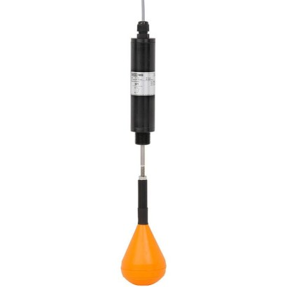
Suspended float switch
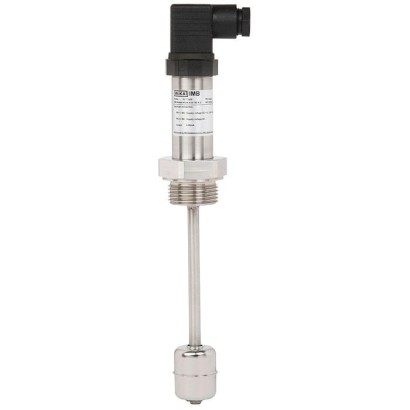
Reed-chain level sensor
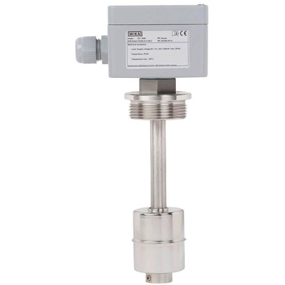
Reed-chain level sensor
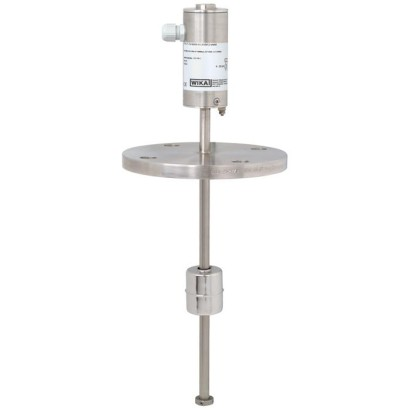
Magnetostrictive level transmitter
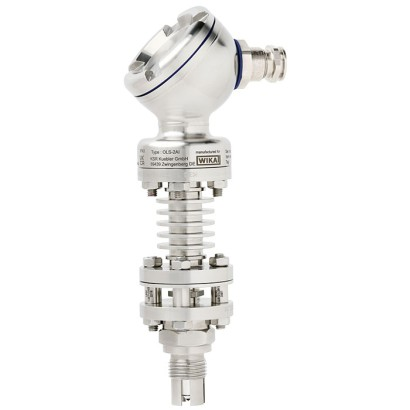
Optoelectronic level switch and switching amplifier